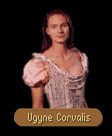

|
|
|  |
[CHAPTER 2]
[CHAPTER 3]
[CHAPTER 6] |
|
|
| CHAPTER 2 - FIRST | CHAPTER 2 - SECOND |
|
A girl crossed the fields. Lacking the arrogant bearing of her father, she moved like a wisp of smoke, her tread so light it seemed she floated rather than walked through the rustling weeds. Flittering to Owyn's side, she kissed him lightly on the cheek. OWYN: You are so much taller than I remember! You've gone and grown up on me, haven't you? UGYNE: I can't remain a little girl all my life, cousin. Father would have me married to some Vicompte somewhere spinning tapestries if he had his way but I'm a little too headstrong for the liking of most of my suitors. You know I've always hoped you would come up and sweep me off to some strange place. OWYN: Third son of a very minor Count? I don't think your father would stand for it. Besides, I still can't conscience any girl that likes barrel ball tourneys. UGYNE: Pig. Are you going to introduce me to your rather handsome friends here, or shall I perish of curiosity? OWYN: Perhaps later, if I'm feeling up to it... UGYNE: I suggest you find a way to or I'll have father put you in irons, that you're a relative notwithstanding. So, what has you tromping all the way up to Cavall Keep?
|
Ugyne shouted at them. Stationing herself before her cousin, she fixed him with her pale amber stare. UGYNE: Owyn! If I didn't know better, I would think you were trying to become a permanent guest. OWYN: Not such a bad prospect. I've always liked this part of the country. UGYNE: You would. Anything to get away from that tyrant of a father of yours. He never allowed us to have any fun at all. Always so serious about everything. OWYN: And I suppose you think your father was any the better about rearing children? UGYNE: Hmm, well, so both our fathers are wretched bores. I suppose that's why we're so much alike... Now, why have you come a pestering a young girl out enjoying the afternoon?
|
| NEWS |
OWYN: So, when is a suitor going to snatch you up? Are there any that are even in good standing?UGYNE: There are two, neither of whom father likes, but then again he never likes anyone I do. One is Myron, my father's solicitor who lives just outside of Cavall Keep with his daughter Ami. He does have a minor claim to nobility because his brother is an Earl someplace, but father thinks his connections are too tenuous for us to consider.
OWYN: And what about the second suitor?
UGYNE: He's a businessman from Kenting Rush named Navon du Sandau. I like him, though he can be a bit intense at times. We like to talk and he is always asking me some point about mythology or another. He doesn't mind a girl who reads.
| FIRST GOODBYE | SECOND GOODBYE |
|
OWYN:
Well, cousin, as nice as its been seeing you again, we've got to be off. Things to do. Dragons
to battle. UGYNE: Fine. Go off and abandon me here so I can expire of boredom here in this sheep herder's paradise! The most excitement I've seen in months is watching when the pigs got loose in Cavall Keep and were running through the streets! OWYN: You'll live. Take care of yourself, Ugyne. And tell your father hello if you see him before I do.
|
OWYN:
Well, cousin, as nice as it's been seeing you again, we've got to be off. Things to do. Dragons
to battle. UGYNE: Fine. Go off and abandon me here so I can expire of boredom. It's perfectly all right with me. OWYN: You'll live. Take care of yourself, Ugyne. And tell your father hello if you see him before I do.
|

| CHAPTER 3 - FIRST | CHAPTER 3 - SECOND |
|
A girl crossed the fields. Lacking the arrogant bearing of her father, she moved like a wisp of smoke, her tread so light it seemed she floated rather than walked through the rustling weeds. Flittering to Owyn's side, she kissed him lightly on the cheek. UGYNE: Did I ever tell you that you show up at the strangest of times? It's nice to see you! OWYN: What are you doing wandering around unescorted? Honestly, you astonish me. By your age, most girls have the common sense to realize there are dangerous types wandering around in the open. UGYNE: How's that for an introduction?! You're only four years older than me, Owyn and I don't see that my age has anything to do with it. I just like to come out here to think when I have a problem that won't solve itself otherwise. It also gives me a safe harbor away from father when he's on one of his raging fits. OWYN: Is he on one at the moment? UGYNE: One of the worst I've ever seen. He's fired the entire kitchen staff, dismissed the guard, thrown out all five of my maids. He's been that way since about dinner time last evening. I tried to ask him what had him so upset, but he would only tell me that he had received some very bad news from a messenger regarding a financial arrangement which he had made. OWYN: Have any idea what the note said? UGYNE: Who knows? He's always on about conspiracy this, conspiracy that. It's like he's always afraid someone's about to find out some dire secret about the family when there's nothing to hide. It's getting terribly repetitive really... So...you have this frightful look on your face as if there's something you're afraid to speak to me about. What is it?
|
Ugyne shouted at them. Stationing herself before her cousin, she fixed him with her pale amber stare. UGYNE: Back again so soon? I shall have to find out what young lady has caught your eye in Cavall Keep! OWYN: Actually, we are back to ask you a few questions. Do you have time for us? UGYNE: Well, I suppose I could fit you in after the lancer's tourney and then the ball, because you know how busy Cavall Keep always is. OWYN: You are absolutely incorrigible! Anyone ever tell you that? UGYNE: Perhaps. Now what is it you three want? Some bit of gossip about my now former handmaidens? A story about old Peter the Grey?
|
| MURDER |
OWYN: You'll forgive us if we look a little ragged, but we're trying to find out about a murder that took place down in Romney. We've been searching for a little while.UGYNE: Do you think the murderer escaped to Cavall Keep?
OWYN: We're not sure. All we know at the moment is it may have had something to do with a brass spyglass or a silver spider we found near the bodies.
UGYNE: I don't suppose the spyglass had a star inscribed on it, did it?
OWYN: I can't recall. Why? Would that be important?
UGYNE: For someone who's a part of the family, you certainly don't seem to know much about the family lore... We used to have a spyglass that sat in a glass case in the entry way of the Keep. There was a legend that if a person knew the right things to think, then they could use the spyglass to spy on the minds of others. It was in the family for generations, but it disappeared about the time that Neville was killed in the wine cellar all those years ago. Father accused the workmen of having stolen it.
OWYN: And what things was the person to think to make the spyglass work?
UGYNE: I don't know. Neville used to tease me and told me he knew what to think and that he could use it, but he never did. It was only a legend, after all.
If Count Corvalis has been asked about NAVON:
| UNPLEASANT PAST |
OWYN: Your father says he doesn't like your suitor Navon because he keeps bringing up painful memories about the Keep when he asks about the family legends. The death of your mother, the fire that burned the Keep down...UGYNE: It isn't fair to hold that against Navon. He is interested in our family, in me, and so naturally he has questions about the Keep. Wouldn't you be interested in the history of someone you wish to marry? Wouldn't you want to know them as well as you know your own family? It's not so much the death of my mother that bothers father, though, as does Neville's death all those years ago. But father insists on clinging to a silly coincidence.
OWYN: Coincidence? What's a coincidence?
UGYNE: Navon's last name is du Sandau. It's the same last name as the man who constructed father's wine cellar, the one that collapsed. Father's holding it against him that he happens to have the same last name! It's so...ridiculous.
| NEVILLE |
OWYN: I don't remember much about how Neville died. It was such a long time ago...UGYNE: You couldn't have known much about it so far off in Tiburn. Mother and father were both in such grief, they didn't want a spectacle made of his death. Neville was down in Cavall Run, sent down by father to get a keg of Quegian Sour from his wine cellar. We had guests that day...
OWYN: Cavall Run?
UGYNE: You remember... Underneath the Keep? All those tunnels that seemed to stretch for miles? We never did know for sure how extensive it was. I used to love to take walks down there in the dark, just to think and have some time to myself. It's one of the things I miss most about the Keep, not having the tunnels to play in anymore.
When Neville didn't come back from getting the keg, father went down into the Run after him. The wine was served, then the appetizers, then the first course, still father hadn't come back. The second course was served, the third, and then finally father appeared. He told us the tunnel had collapsed and Neville was trapped behind it all. We were never able to dig it out enough to recover the body...
| FAMILY LEGENDS |
OWYN: Your father said Navon kept at you about the family legends...UGYNE: He was fascinated by anything that had to do with the Corvalis family. He would ask where the spyglass had come from and how long the Keep had been standing and where the Guarda Revanche went to. We talked about everything.
| SWORD |
OWYN: What does the Guarda Revanche have to do with our family history? I thought it was some kind of legend about the days when only the elves lived here.UGYNE: The part of the legend that everybody knows has to do with the elves, but for a time the Guarda Revanche was in our family's possession, or so family legend has it.
Upon her fourteenth birthday, the Lady of Cavall Keep was given a special present by her elven servant to give her husband, Lord Corvalis, a sword that would make him great among men. Whereupon she ran to his bedchamber to present him with the great gift, but upon opening the door she was shaken by a great evil. Within her hand, the sword blade began to glow and she screamed as she raised the blade over her head and cleaved her husband's head from off his shoulders. From there, she went from one child's chamber to the next until she had slain all her children by Lord Corvalis and once that was done, she ran mad and was seen in Cavall no more.
OWYN: How charming. You don't have it laying about somewhere do you?
UGYNE: Be nice to me or I may give the sword to you! No, the legend goes on to say that it was eventually removed from the family after the episode was repeated by later generations of other branches of our family. A book I have about it tells where it went, but I lent the book to Navon so he could look it over.
OWYN: That's weird. I thought that the Guarda Revanche was only supposed to work on moredhel...
UGYNE: It's a legend. No one ever said that a legend has to be consistent!
| FIRST GOODBYE | SECOND GOODBYE |
|
OWYN:
As nice as it's been talking to you again, we have to be on our way. Promise me you'll find
someone to look after you soon. UGYNE: I would appreciate it if you stopped fretting about me as if I were a child. But I'll take the promise only so long as you make the same promise. OWYN: Very well. You have my word as the son of the Count of Tiburn. Goodbye, Ugyne.
|
OWYN:
As nice as it's been talking to you again, we have to be on our way. Things to do. UGYNE: Well, as it happens, I have a few things to do as well. I have to dust all the flowers so the bees don't sneeze. Nothing worse than sneezing bees. Then I have to rebuild the Keep with twigs. OWYN: Goodbye you silly goose. Take care of yourself. And make sure you get in before dark. I don't like the idea of you wandering around out here alone.
|

| CHAPTER 6 - FIRST | CHAPTER 6 - SECOND |
|
A figure turned the corner of the house. Happily, Owyn dropped his staff, opening up his arms to give the approaching girl a hug. UGYNE: I don't know why you're here, Owyn, but I am so glad. I really needed to see a friendly face about now... OWYN: What are you doing out of Cavall Keep? UGYNE: We came up when some of Prince Arutha's men passed through Cavall Keep. They said there is a battle about to happen and there were going to be troops mustering here with the Lady Boswich. Is that true? Are we really going to war with the moredhel again? OWYN: I don't know how much I am allowed to say, but there is a very good possibility of it. Actually, Gorath and I are supposed to be looking for a magician named Pug from Stardock, but with the war going on here... I wanted to make sure that you and your father were all right. UGYNE: Why wouldn't we be? It's not as if the fighting will get this far south...will it? OWYN: No...it's just that... There are several things we will need to talk about when things have calmed down. I'm just glad that you're safe. I was concerned that something might have happened to you. UGYNE: You're getting to be as silly as I am. So...what have you been eating? You're as thin as a bone. Is there anything I can do for you two?
|
Ugyne shouted at them. Stationing herself before her cousin, she fixed him with her pale amber stare. UGYNE: You've come back! What is it?
|
| ALCOHOL (if Lurough) |
OWYN: Some of the tavern owners here are concerned that if the men don't get some alcohol soon, there may be a riot. As I recall, your father had quite a stock of foreign wines once...UGYNE: That was a long time ago, before... Can we not talk about this now? I have a terrible headache and I'm doing the best I can to try and help out Lorna with the children.
OWYN: Ordinarily I wouldn't push the issue, but it seems to be a crisis at the moment. The fight at Northwarden might pale in comparison to what may happen around here if we don't get a few of these men drunk.
UGYNE: You'll need to find father and ask him. He might be able to speak to Lady Boswich on your behalf. I know that she used to send us wines from her secret reserves.
| HER FATHER |
OWYN: Where is your father? I'm surprised he isn't trying to command this muster himself.UGYNE: I don't know...we've had a parting of the ways. I don't know when I will see him again. I think he may be with Lady Boswich in the mustering area, but I'm not sure. I don't think I'm very sure of anything anymore...
OWYN: Why? What's wrong?
UGYNE: I don't know who to trust anymore. I don't know who's telling the truth and who's lying to me. Do you remember when my brother was killed in the wine cellar accident all those years ago?
OWYN: Yes...Ugyne, I...
UGYNE: He didn't die, Owyn. Father found out Neville was a bastard and so he arranged for the accident, but it didn't kill Neville. And then Neville was found by some bad men and they were going to ransom him but Neville knew father wouldn't pay. Then he found a way to use his spyglass against them and...Owyn, he came back as one of my suitors! I hadn't seen him since I was a little girl and he had changed so much. How could I have recognized him? He called himself Navon and I thought...I thought...I don't know...
OWYN: Shhhhhh. You're babbling, cousin. Maybe you can explain all of this to me sometime after you've calmed down a bit. I think you need some rest.
| GOODBYE |
|
OWYN:
Well, now that I know you are all right, I think we have to be going. I'm not sure how much
longer we will be in the area. Do you need anything? UGYNE: No, I'll be fine, I think. You take care of yourself, cousin. OWYN: You too, Ugyne. I promise, I'll come and visit as soon as I can.
|